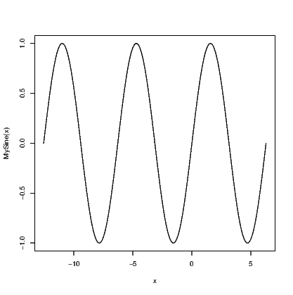
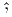

This chapter explains how various tasks in introductory calculus can be undertaken using R.
Before we embark on doing those fun things we want to do, we need to learn how to store a mathematical expression as an object in R. There are many keywords that appear in these expressions which are translated to symbols when seen printed in a graph window but remain in ordinary text in R commands. Such symbols include Greek letters, hats and bars, all of which have a meaning.
This can be a lot of fun if you set things up right to start with. We create a function to represent the mathematical expression using the function() command, then plot it using either the plot.function() or curve() commands.

link to SVG file: CalculusSineCurve-1.svg
You can use any valid mathematical expression in the function you create. You might find it useful to test your idea= values for your inputs that are easy to work with, such as zero and one. You could then use integers, including negative integers, but it could be easier to test your functions using values that lead to identifiable results such as multiples of π when working with trignometric functions. For example:
«EvalMySine» MySine(c((0:4)*pi/2)) @
The internal code used for differentiation in R is not as comprehensive as other mathematical software. It can handle arithmetic operators +, -, *, ∕ and  and the single-variable functions exp(), log() (natural logarithm), sin(), cos(), tan(), sinh(), cosh(), sqrt(), pnorm(), dnorm(), asin() (inverse sine), acos() (inverse cosine), atan() (inverse tangent), and various gamma() functions. The functions pnorm() and dnorm() are restricted to the standard normal distribution.
The easiest way to find the derivative of an expression is to store the mathematical function using the expression() command, and then use the D() or deriv() commands.
The second argument to the D() function needs quote marks around it.